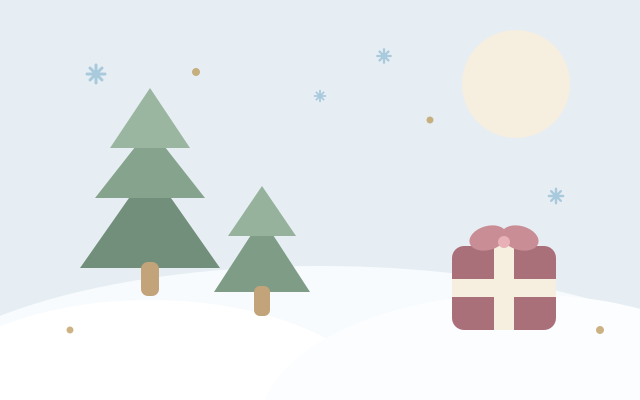
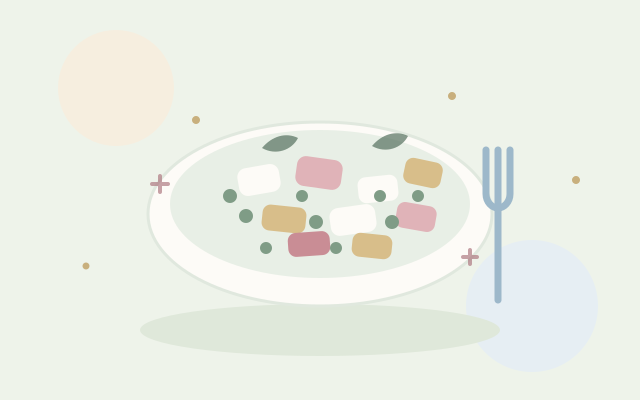
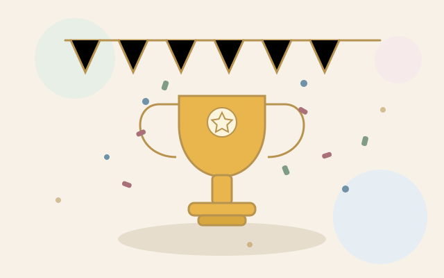

Новый год 2027
Меню на 12 человек: канапе, закуски, рыбный и мясной салаты, два горячих блюда, список продуктов и план подготовки по дням.
Открыть страницуВсё для праздника · без интернета
Праздники события
Готовые меню, база рецептов и конкурсы для гостей. Выберите раздел — всё остальное уже собрано на его странице.

Меню на 12 человек: канапе, закуски, рыбный и мясной салаты, два горячих блюда, список продуктов и план подготовки по дням.
Открыть страницу
Салаты, канапе, холодные и горячие закуски, гарниры, свинина, курица, рыба и говядина. Состав с граммовками, вес готового блюда и код подборки рецептов.
Открыть страницу
Конкурсы, викторины и задания для праздничного вечера — для детей и взрослых. Раздел готовится.
Открыть страницу
Страницы открываются двойным кликом по index.html.
Стили, картинки и данные лежат внутри проекта — ни одного
внешнего запроса. Эти же файлы отдаёт GitHub Pages.
new_year/ — новогоднее менюrecipes/ — рецепты праздничного столаcontests/ — конкурсы и игрыdata/ — база рецептовcontests/.index.html, стили — в css/.